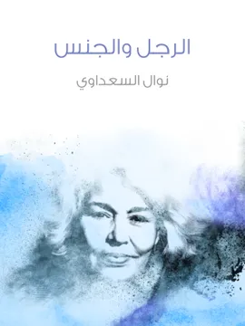

الرجل والجنس

قراءة عربية أصلية محددة النطاق في الصفحات 15، 18 من ملف PDF المرتبط، وليست تلخيصا كاملا للكتاب. نناقش ما تدعمه هذه المقاطع فقط.
من قهر المرأة إلى خوف الرجل
تعترف السعداوي في مقدمة «الرجل والجنس» أن فكرة عمل علمي عن الرجل لم تكن في ذهنيها؛ دراساتها كانت تتجه إلى المرأة بسبب القهر الذي عانت منه في مجتمع سيطر عليه الرجال، لكنها ما إن أصدرت كتبها السابقة عن المرأة حتى أصبح الرجال هم الأغلبية ضمن طالبي الرأي والمساعدة لمشكلاتهم النفسية والجسدية. وتحكي عن زوج يعاني خوفًا شديدًا يظن أنه فقد قدرته الجنسية أو على وشك أن يفقدها ويخشى أن تكتشف زوجته ضعفه فتذهب إلى رجل آخر، لتدرك أن عددًا كبيرًا من الرجال ينطوون في أعماقهم على خوف أو قلق من هذه الناحية، وأن هذا القلق يفسد حياة الرجال النفسية والجسدية بدرجات متفاوتة، فبدأت تدرس هذه الظواهر.
زاوية وحدود القراءة
قراءة في مقدمة الكتاب الخاصة به من الصفحات 15 إلى 18، وهي نص مختلف كليًا عن المقدمة القصيرة المشتركة مع كتاب آخر للمؤلفة، ولا في فصول الكتاب (مثل «الإله الذكر والأنثى الآثمة») التي لم تُقرأ. حكاية الزوج والعيادة المجانية من نص المقدمة نفسها.
الطبعة والقراءة
هذه النسخة من الكتاب صادرة ومتاحة مجانًا بموجب اتفاق قانوني بين مؤسسة هنداوي والسيدة الدكتورة نوال السعداوي.
تنزيل PDF المجاني ↓ القراءة والمصدر الرسمي ↗